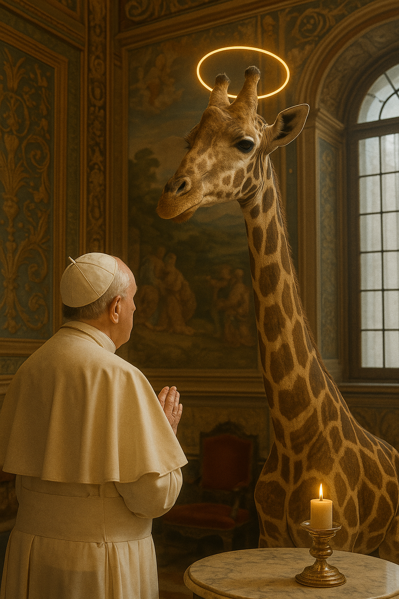

Home
Sobre a Lenda
Blog
Biblioteca Cósmica
Contato
GitHub
Another action
Something else here
"Em uma madrugada romana, uma girafa apareceu nos jardins do Vaticano e mudou tudo que sabíamos sobre o cosmos e a consciência."
[Conheça a Lenda]

Previous
Next